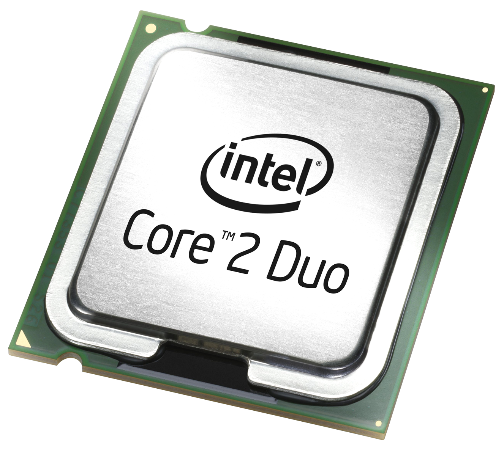
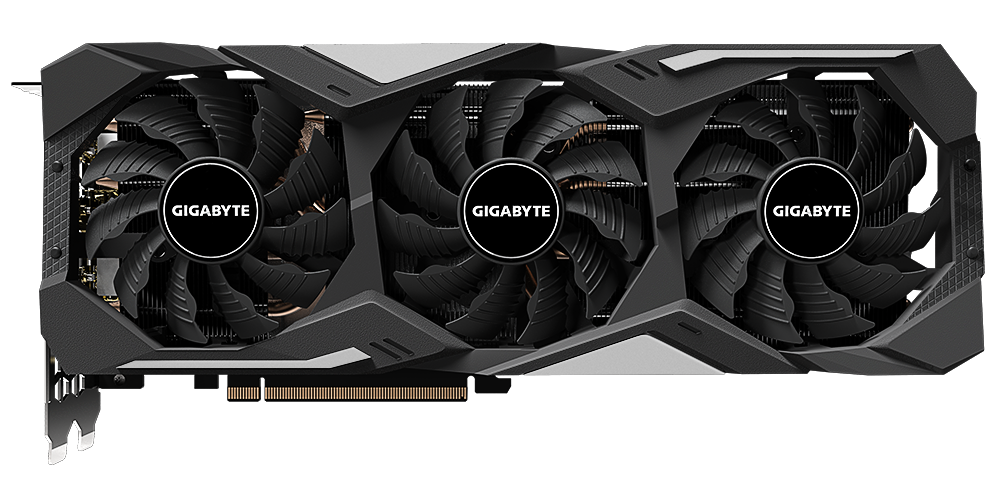
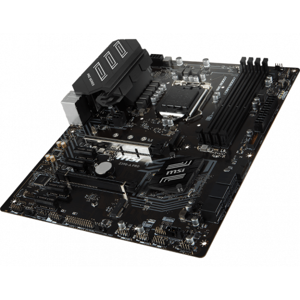
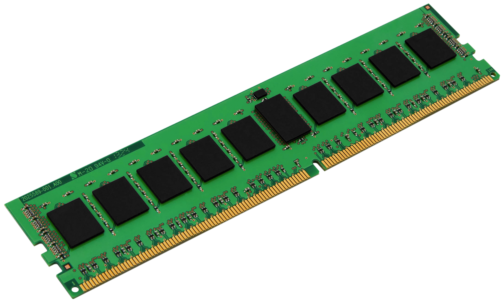
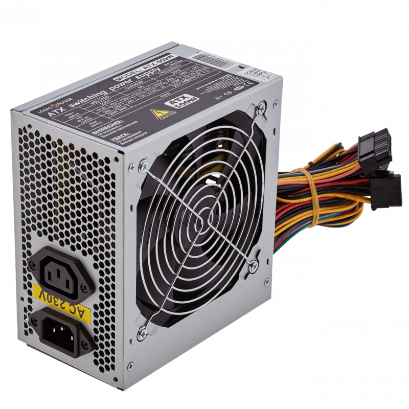

Центра́льный проце́ссор (ЦП; также центра́льное проце́ссорное устро́йство — ЦПУ; англ. central processing unit, CPU, дословно — центральное обрабатывающее устройство) — электронный блок, либо интегральная схема (микропроцессор), исполняющая машинные инструкции (код программ), главная часть аппаратного обеспечения компьютера или программируемого логического контроллера. Иногда называют микропроцессором или просто процессором.
Главными характеристиками ЦПУ являются: тактовая частота, производительность, энергопотребление, нормы литографического процесса, используемого при производстве (для микропроцессоров), и архитектура.

Видеока́рта (также видеоада́птер, графический ада́птер, графи́ческая пла́та, графи́ческая ка́рта, графи́ческий ускори́тель) — устройство, преобразующее графический образ, хранящийся как содержимое памяти компьютера (или самого адаптера), в форму, пригодную для дальнейшего вывода на экран монитора. Первые мониторы, построенные на электронно-лучевых трубках, работали по телевизионному принципу сканирования экрана электронным лучом, и для отображения требовался видеосигнал, генерируемый видеокартой.

Матери́нская (систе́мная) пла́та (от англ. motherboard, MB или англ. mainboard — главная плата), (в просторечии: материнка, матка и т. п.)— печатная плата, являющаяся основой построения модульного устройства, например — компьютера.
Материнская плата содержит основную часть устройства, дополнительные же или взаимозаменяемые платы называются дочерними или платами расширений.

Операти́вная па́мять (англ. Random Access Memory, RAM, память с произвольным доступом) или операти́вное запомина́ющее устро́йство (ОЗУ) — энергозависимая часть системы компьютерной памяти, в которой во время работы компьютера хранится выполняемый машинный код (программы), а также входные, выходные и промежуточные данные, обрабатываемые процессором.

Накопи́тель на жёстких магни́тных ди́сках, или НЖМД (англ. hard (magnetic) disk drive, HDD, HMDD), жёсткий диск, винчестер — запоминающее устройство (устройство хранения информации) произвольного доступа, основанное на принципе магнитной записи. Является основным накопителем данных в большинстве компьютеров.

Компьютерный блок питания (или сокращённо — блок питания, БП) — вторичный источник электропитания, предназначенный для снабжения узлов компьютера электроэнергией постоянного тока путём преобразования сетевого напряжения до требуемых значений.